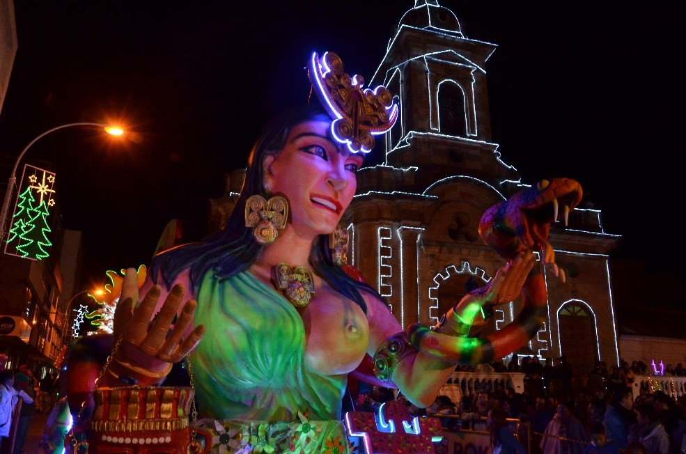

Actividades
Actividades
Paipa, al ser considerada la capital turística del departamento de Boyacá, provee de varias actividades
atractivas para atraer turísticas en distintas épocas del año en donde se da a conocer la cultura boyacense,
los paisajes del municipio además de competencias y conciertos importantes a nivel nacional e internacional.
Dentro de los eventos destacados en Paipa se encuentra:
Festival de la ruana, el pañolon, la almojábana y el amasijo
Es uno de los primeros eventos que sucede en Paipa en el año (alrededor de marzo y abril se ejecuta
el evento). En este evento se muestra a los turistas elementos propios de la cultura boyacense como lo es
la ruana, una prenda muy común en el departamento y de demás prendas elaboradas a base de la lana de oveja.
Además de esto se muestran las comídas típicas de Paipa y sus alrededores como la almojábana, el pan de bono,
el amasijo, el masato, entre muchos otros. Este evento es una oportunidad para demostrar la gran variedad
cultural y gastronómica del municipio y de resaltar el por qué es considerada la capital turística de Boyacá.
Festival del lago

Este festival se realiza entre los meses de agosto y septiembre de cada año. En donde se demuestra la importancia
turística que tiene el lago Sochagota para Paipa. Se realizan diferentes actividades deportivas y culturales alrededor del lago,
como competencias nacionales de canotaje, de paracaídismo, remo, entre muchas otras que acogen diferentes deportistas de todo el país, y,
algunas veces, del mundo. Además de ello, se motiva a diferentes actividades culturales y gastronómicas promocionando artesanías y demás
elaboraciones y obras propias de la cultura paipana.
Concurso nacional de bandas
Es un concurso que atrae a las diferentes bandas filarmónicas del país siendo un evento atractivo turístico a nivel nacional.
Este evento tiene como motivo principal, cada año (Se celebra los primeros días de octubre), conmemorar cada región de Colombia
con su música mediante los temas y las orquestas invitadas al concurso. El concurso nacional de bandas tiene un atractivo interesante que lo hace
un evento imperdible en Paipa que tiene una basta trayectoria, dado a que rescata y promueve la institución tradicional de los
pueblos que se lleva elaborando desde 1979. Cada año se invocan a más de 30 bandas para competir, alrededor de 1800 músicos que se
clasifican en cinco categorías: Universitarias y/o profesionales, especiales, mayores, juveniles y fiesteras.
Aguinaldo paipano

Este evento que ocurre a mediados de diciembre, acoge una costumbre traída de Tunja similar al aguinaldo boyacense. Este evento es una integración
cultural que trae artistas de talla nacional e internacional y se celebra las tradiciones navideñas como lo son
el desfile de carrosas y comparsas, alumbrados navideños y diferentes actividades que acompañan el evento. El aguinaldo paipano
se planea desde inicio de año dado a que su preuspuesto viene dado de manera voluntaria por la poblaación paipana mediante rifas y demás
para poder recolectar los suficientes fondos y, junto con inversión de la alcaldía, poder lanzar un evento de la talla necesaria para
la población paipana.